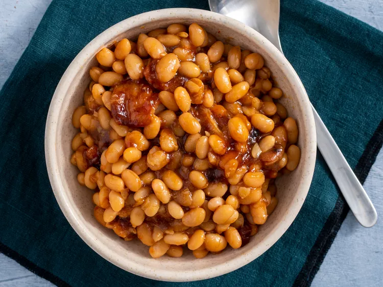

Baked Beans

Description
This is a Boston Baked Beans Recipe!
Ingredients
- 2 Cups dry navy beans
- 1/2 pound uncooked bacon strips/li>
- 1 medium onion, diced
- 1/2 cup ketchup
- 3 tablespoons molasses
- 1/4 cup brown sugar
- 1 taplespoon Worcestershire sauce
- 2 teaspoons salt
- 1/4 teaspoon ground black pepper
- 1/4 teaspoon dry mustard
Steps
- Transfer beans and soaking water to a saucepan
- Bring to a boil and simmer until tender
- Preheat the oven to 325 degrees F
- Arrange 1/2 of the beans in the bottom of a casserole dish. Place 1/2 of the bacon srips over the beans and 1/2 of the onions over top. Repeat the layers.
- Combine ketchup, molasses, brown sugar, Worcestershire sauce, salt, pepper and mustard. Bring to a boil
- Pour sauce over the beans
- Bake in the oven for 1 1/2 hours.
Go Back